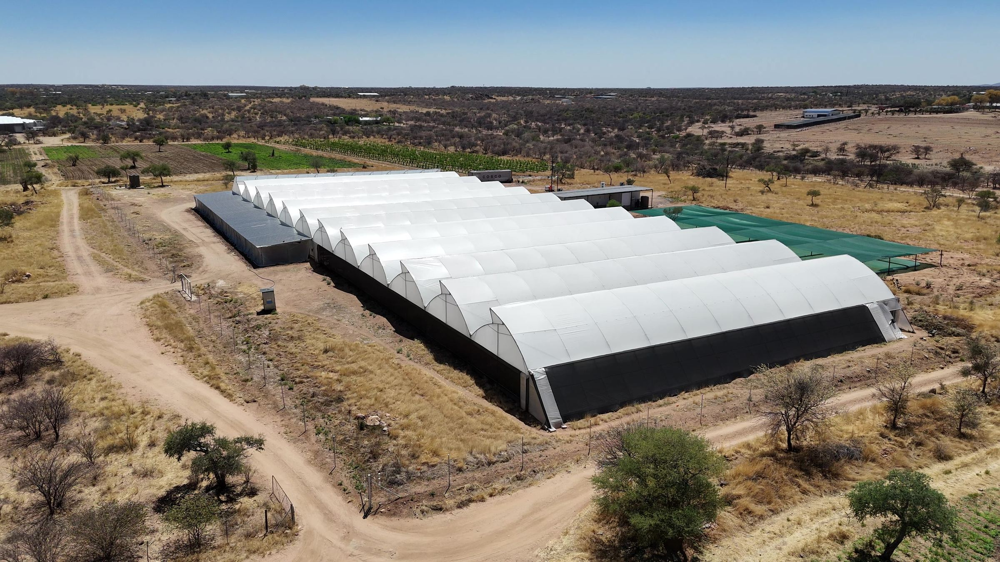
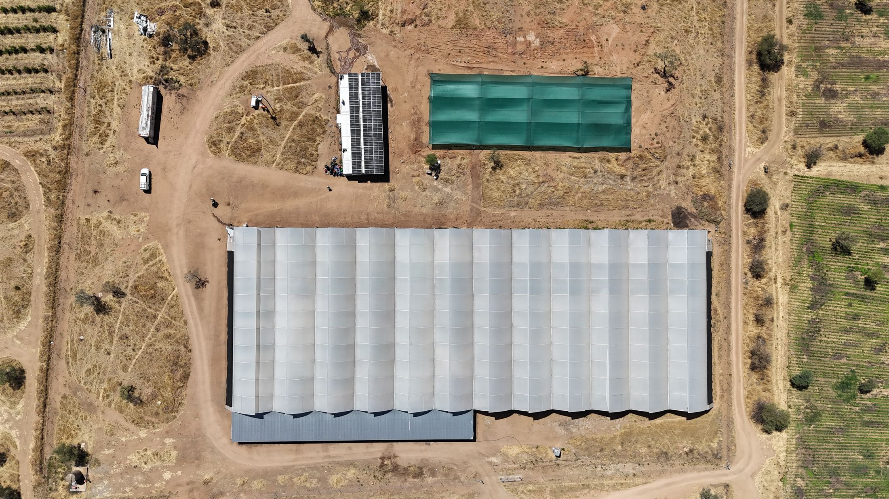
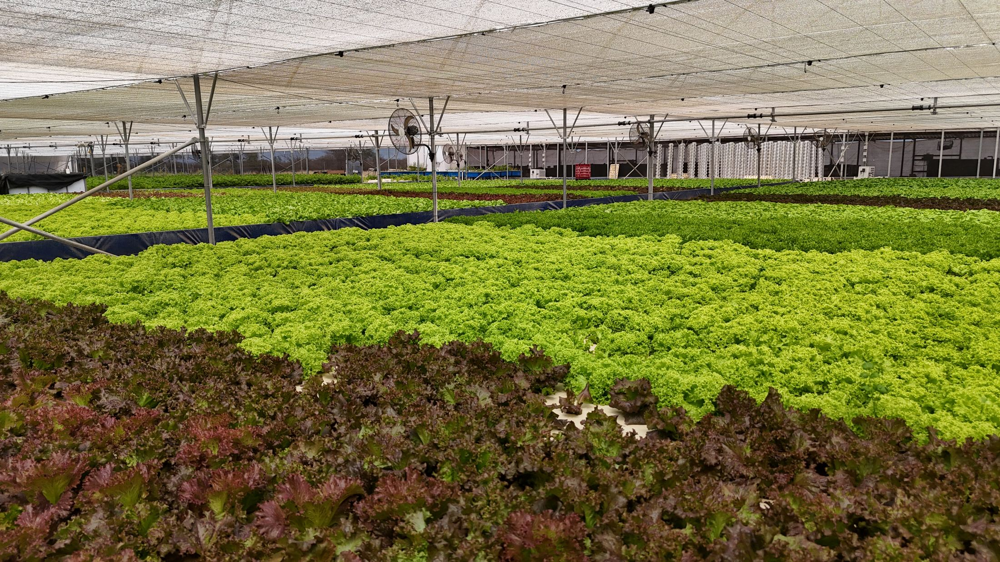
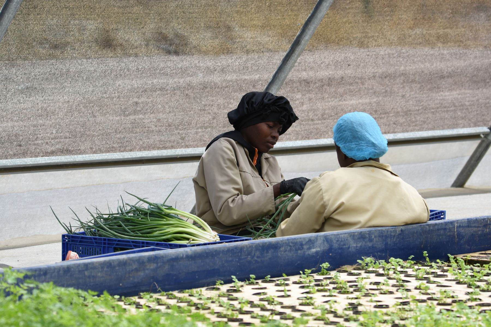
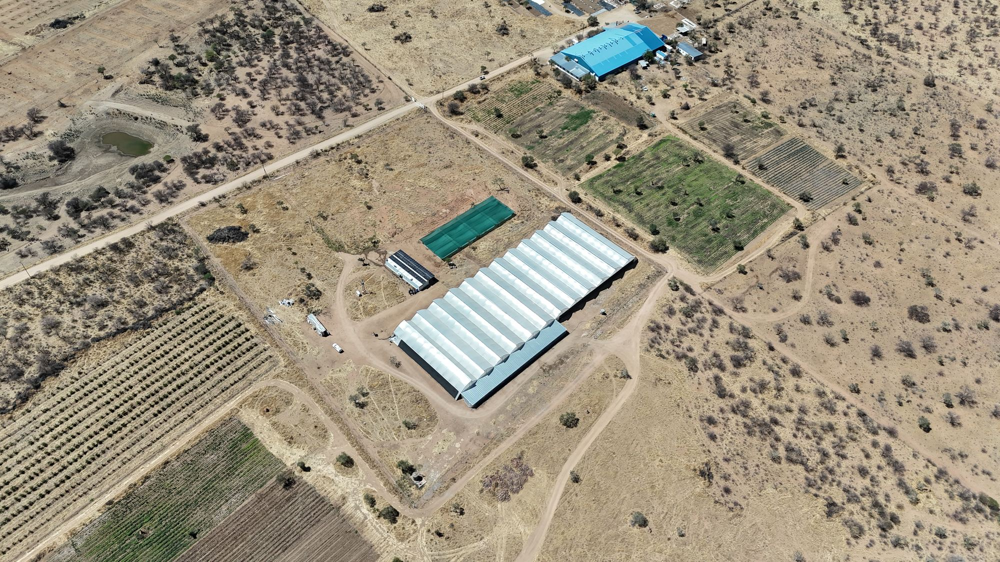

One site. Seed to shelf.
One of the largest commercial aquaponics facilities in Africa, 70 km north of Windhoek. 9,500 m² under cover in one of the driest countries on the continent. Six independent growing systems. More than 12,000 lettuce plants planted out every week, all year.
Nothing waits on a supplier or a truck.

- HatcheryOur own red tilapia, selected for Namibian heat and cold winter nights
- Seedling houseWeekly sowing programme matched to retail orders
- Aquaponic greenhouse5,000 m² of floating-raft beds
- Net house4,500 m² of soil beds for herbs and leaf crops
- High-care packhouseTemperature-controlled washing, drying and packing, with cold storage
- PowerOff-grid solar built with SolarSaver, generator as backup
Aquaponics is the method, not the headline.
Aquaponics joins fish farming and plant growing in one loop of water. The fish feed the bacteria, the bacteria feed the plants, and the plants return clean water to the fish.
That is the simple version. The commercial version is harder, and it is where most projects fail. Fish do not supply everything a crop needs. We test the water in every system, add the specific nutrients each crop stage is short of, and make small, regular water changes to keep salts from building up.
The result is a lettuce crop we can harvest up to 11 times a year, to the same specification each time.

less water than growing the same crop in a field. We harvest rain from the greenhouse roof to supply the system.
independent aquaponic growing systems.
people work on the farm, 22 of them in permanent jobs.
Every batch tracked from seed to pack.
batch records since April 2025, across 74 weekly batches.
water parameters logged in all six systems: pH, salinity, nitrate, potassium, calcium, dissolved oxygen and temperature.
days of packhouse temperature and wash-water records.
When a number drifts, we see it before the crop does.
We did not get this right the first time.
Early production was inconsistent, in ways a hobby system can live with and a retail supplier cannot. We reviewed the whole process, rebuilt how we manage water and nutrients, and wrote our own production tracker.
In 2026 we doubled the aquaponic growing area, added the net house and seedling house, and expanded the packhouse.
- Local GAPPrimary Farm Assurance: food safety, quality, traceability
- Namibian Agronomic BoardRegistered producer

